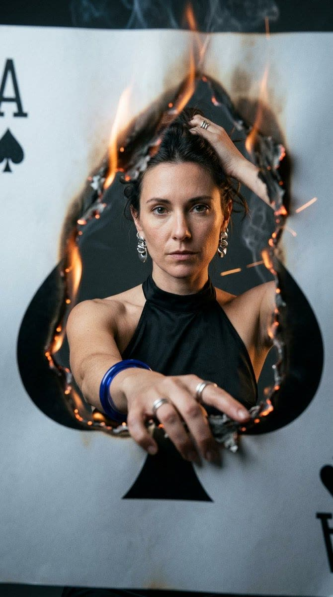

Nano Banana 2 beauty editorial through a burning Ace of Spades: face framed in a smouldering spade-shaped hole, fingers on the charred edge
PRP-092Prop stylingNano Banana 2by @dreamydigiarts2026-11-18

A prop-as-frame beauty image: an oversized playing card held close to the lens whose spade has "burned open into a real aperture" with curled fibres, glowing edges and small live flames, the model's face seen through the hole and one hand reaching through to grip the edge. Lighting splits a cool soft key on her face from a warm fire rim on cheekbone, fingers and jewellery. A useful line for thumbnail design: it "should read instantly as “woman through a burning Ace of Spades” at thumbnail size, then reward closer inspection".
Prompt
Create a vertical 9:16 beauty-fashion editorial built around an oversized physical Ace of Spades playing card suspended close to the camera. Its central black spade has burned open into a real aperture, with curled paper fibers, glowing edges, drifting ash, and small active flames tracing only parts of the cutout. An adult woman stands directly behind the opening so her face, throat, and upper torso appear through the spade-shaped void. Dress her in a fitted black satin halter top with a clean high neckline and open shoulders, paired with sculptural silver earrings, stacked slim rings, and one translucent cobalt glass bangle. Frame very tightly through the burned aperture. One hand reaches forward through the opening toward the lens, fingertips lightly gripping the charred card edge, while her other hand lifts into her hair behind the paper plane. Her gaze is direct and unflinching, lips relaxed, expression controlled rather than theatrical. Keep the giant card slightly out of focus at the extreme foreground while her eyes remain razor sharp. Let the irregular burning edge partially interrupt her hair and shoulders so the card and portrait cannot be separated compositionally. Use a dark graphite studio with one cool soft key on her face and a warm fire rim catching cheekbone, fingers, jewelry, and individual hair strands. Smoke should drift upward across only parts of the frame, with a few sparks crossing the lens. Preserve natural skin texture, satin sheen, scorched paper, ember glow, ash residue, heat distortion, metallic jewelry, and fine film grain. The image should read instantly as “woman through a burning Ace of Spades” at thumbnail size, then reward closer inspection with tactile fire, paper, and beauty detail.
Our Seedance 2.5 adaptation
[ADAPTED for Seedance 2.5 by Grok Bot; not the creator's prompt. Follows the official BytePlus Seedance 2.5 prompt guide and its official sd25-pe prompt-optimizer skill: parameters only on the API line (not in the prompt body), subject + action + scene, then visuals, camera (move, subject, start, direction, arrival) and sound; only the source's own exclusions are kept.] API: duration 5, ratio 9:16 (taken from the first frame), resolution 1080p (4k for a final), generate_audio true; first_frame = the PRP-092 still. 【Subject】The woman seen through the burned spade-shaped hole of the oversized Ace of Spades, as in the first frame. 【Action】The small flames creep a little further along the edge of the cutout; ash flakes drift upward; she tightens her fingertips on the charred edge, lowers the hand in her hair and holds the lens with a steady gaze. 【Camera】Locked close-up, the card soft in the extreme foreground, her eyes sharp; a very slow push-in toward the aperture. 【Visuals】Dark graphite studio, cool soft key on her face, warm fire rim on cheekbone, fingers and jewellery, smoke across part of the frame, a few sparks crossing the lens, fine film grain. 【Sound】Paper crackling and the soft roar of small flames, nothing else.
Tags: Nano Banana 2, WeryAI, prop as frame, burning playing card, foreground aperture, cool key + fire rim, smoke and sparks, thumbnail legibility, fine grain, image